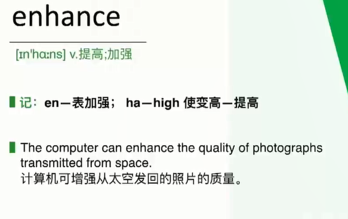
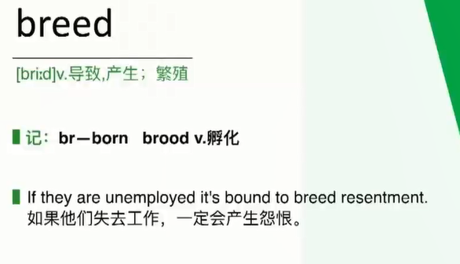
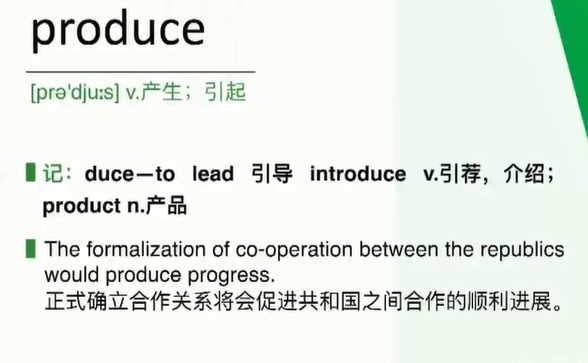
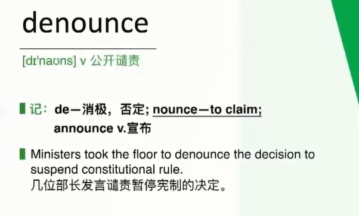

# 同义词替换
# 表示 “减少、退化、衰退” 相关词汇
- diminish
- dwindle
- lessen
lessonn. 一节课，一课时；教学单元，（课本中的）课；经验，教训；（教堂礼拜中的）《圣经》选读 v. <古> 给…… 上课；教训，训诫
- slash
- slump
- recession
- lower
- depression
- degenerate
- degrade
- decay
- decrease
- reduction
- decline
- deteriorate
- worsen
- aggravate
# 表示 “增加、促进” 相关的词汇
- mount
- augment
- rise
- raise
不表示数字增加，可以表示加薪
- expand
- enhance

- rocket
- grow
- elevate
- soar
也有 翱翔 的含义
- surge
- boost
- facilitate
- promote
- enlarge
- add
- foster

- accelerate
- amplify
多用于声音上
- magnify
# 表示 “原因、导致、引发” 的词汇
- cause
- give rise to
- contribute
- result in
- fuel
- bring about
- promote
- ignite
- breed

- lead to
- generate
- produce

- spell
n. 一段时间；（疾病突然的）一次发作；咒语，符咒，着魔；魅力，魔力；轮班；<澳> 休息期；（板球）（一个投手的）一轮投球时间；木片
v. 拼写，拼缀出（单词）；拼作，拼成；招致，意味着（通常指坏事）；具有…… 的显著特征；替换，顶替；<澳> 稍事休息
【名】 （Spell）斯佩尔（人名）
复数 spells 第三人称单数 spells 现在分词 spelling 过去式 spelt 或 spelled 过去分词 spelt 或 spelled
- incur
- trigger
# 表示 “批评、谴责” 的词汇
- blame
- criticize
- scold
斥责下级，晚辈
- accuse
- condemn
- denounce

- be under fire
# 表示 “赞扬” 的词汇
- praise
- compliment
- commend
- celebrate
# 表示 “重要” 相关词汇
- vital
- significant